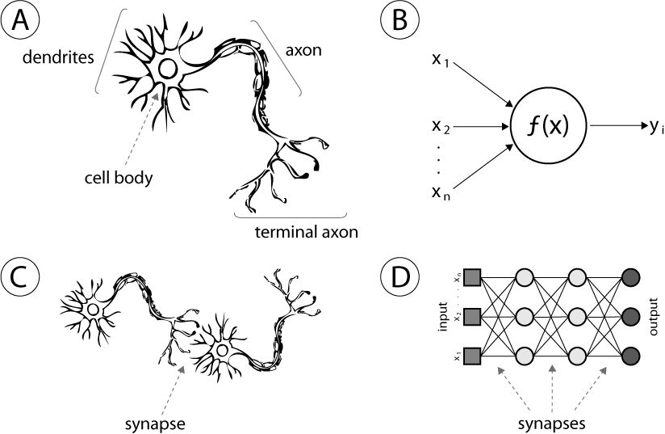

Computational Mechanics
- FEA / CFD — Ansys, OpenFOAM
- Surrogate Modeling — PyTorch, Scikit-Learn
- Optimization — Pareto, Bayesian, Gradient-based
- Uncertainty Quantification — Ensemble methods
Computational Mechanical Egnineer building at the intersection of computational mechanics, embedded systems, and local-first AI. I replace expensive simulations with millisecond surrogates, automate FEA workflows end-to-end, and run autonomous agents on local hardware - no cloud required.

20-model MLP ensemble replacing 1,200+ Ansys simulations with millisecond inference. Multi-output regression (6 targets), ensemble UQ for epistemic uncertainty, exact Jacobian sensitivities via PyTorch weight reconstruction, and Pareto-driven design optimization with FEA revalidation.
A LangGraph-based agent runtime executing locally via Ollama on local hardware. Features persistent flat-file semantic memory with tooling, token-aware context compaction at 50k tokens(adjustable), subagent delegation with structured exit signals, and a persistent shell for controlled code execution along with permission gates for file deletion, overwriting, python code execution using bash.
Autonomous self-healing firmware for safety-critical environments. Triple Modular Redundancy (TMR) with expression diversity to defeat compiler optimization, two-stage 3×3 matrix voting, SHA-256 verified OTA slots, and Python fault injector for validation.